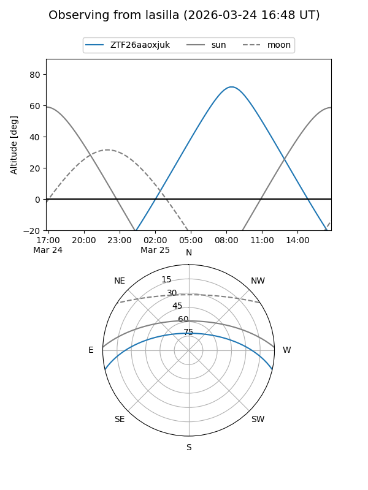
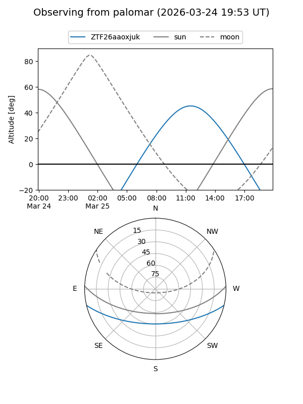

ZTF26aaoxjuk
Target ZTF26aaoxjuk at 2026-03-25 12:16
Aliases and brokers:
FINK: link
Lasair: link
ALeRCE: link
alt names
ZTF26aaoxjuk (ztf,fink_ztf)
Coordinates:
equatorial (ra, dec) = 238.2655,-11.21637
equatorial (HMS+DMS) = 15:53:03.73,-11:12:58.95
galactic (l, b) = (358.0398,+31.61512)
Flags:
Photometry:
last ztfg=16.41, ztfr=15.65
1 ztfg, 1 ztfr detections
Lightcurve
Visibility


Additional plots